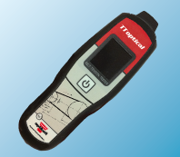

Produkte
zurück
Produkt
Details
Anwendung
optibelt
TT optical

Das Optibelt TT optical Frequenz-Messgerät dient zur Vorspannungs- überprüfung von Antriebsriemen durch Frequenzmessung.
Dieses neu entwickelte Messgerät bietet durch seine kompakte Bauform universelle Einsatzmöglichkeiten für Antriebe im Maschinenbau, in der Kfz-Industrie und für viele weitere Anwendungsfälle.
Einfach und schnell lassen sich Keilriemen, Kraftbänder, Rippenbänder und Zahnriemen auf ihre Vorspannwerte prüfen.
Darüber hinaus bietet TT optical
weitere Vorteile:
einfache Bedienung
Messbereich 5 Hz - 500 Hz
kompakte Abmessungen
höchste Zuverlässigkeit
hohe Messgenauigkeit
werkskalibriert
CE-zugelassen
Downloads
Optibelt
Produktbroschüre
deutsch